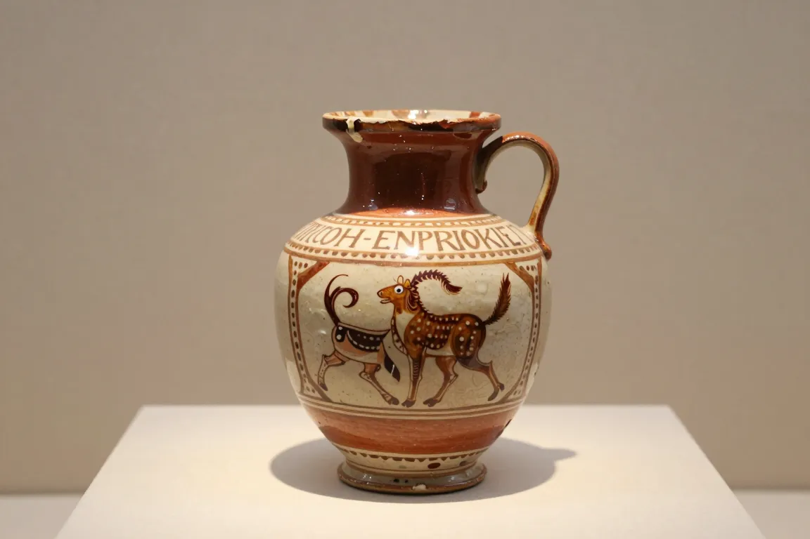

Красная гончарная глина, которую английские деревенские гончары покрывали прозрачной свинцовой глазурью и расписывали сливочным и коричневым ангобом. Большие блюда, горшки для поссета и кувшины несут смелые картинки и стишки.

Главная идея
Деревенскому гончару не нужен дорогой цвет: красная глина, белый ангоб из пера и свинцовая глазурь дают смелую картинку.
Принципы дизайна
Вытачивайте черепок из местной красно-обжигающейся глины; стенка 5–8 мм.
Покрывайте лицевую сторону белым ангобом, когда глина кожетвёрдая.
Наносите жидкий ангоб из трубки-пера линиями 2–4 мм и точками.
Рисуйте на большом блюде картину: короля, русалку, пеликана или цветок.
Пишите имя, дату или стишок заглавными буквами по борту.
Окунайте вещь в прозрачную свинцовую глазурь; ангоб становится сливочным, а глина янтарной и коричневой.
Обжигайте глазурь при 1000–1080 °C одним обжигом после утильного.